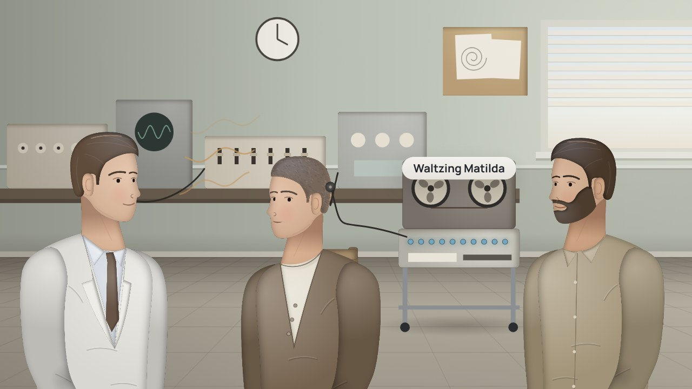
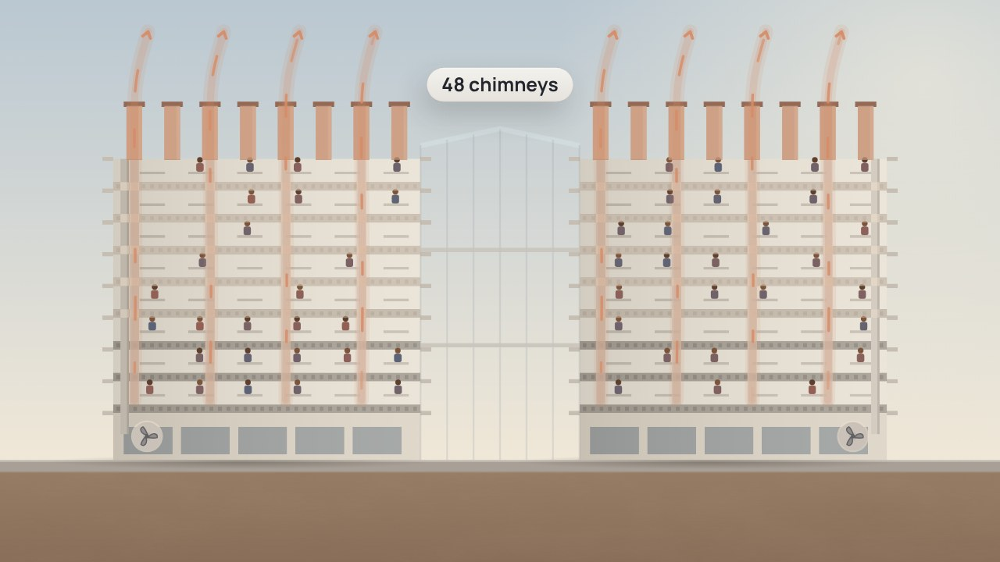

Película 1 de 10 · Cómo llegamos aquí
Décadas en gestación
Un agente de IA se suma al equipo de Jun, y parece salir de la nada. Sus ideas tardaron décadas: mira de dónde vienen los modelos.
Temas › Agentes de IA en el trabajo con datos › Qué es un agente
La primera serie sobre agentes de IA en el trabajo con datos. Jun construye el proyecto de datos de la universidad, y este semestre un agente trabaja a su lado. Antes de cualquier regla o producto, diez películas preguntan cómo surgieron los modelos de hoy, qué tomaron del cerebro, qué es un agente, cómo es trabajar con agentes, por qué eso significa gobernarlos, y qué nos dicen de nosotros mismos.
Las películas están en inglés, con subtítulos en español. Estas páginas, los capítulos, las preguntas, los labs y las situaciones están en español.
Míralas en orden: cada película se apoya en la anterior.
Película 1 de 10 · Cómo llegamos aquí
Un agente de IA se suma al equipo de Jun, y parece salir de la nada. Sus ideas tardaron décadas: mira de dónde vienen los modelos.

Película 2 de 10 · Neuronas y modelos
Por qué la primera máquina que aprendía copió una neurona, qué tomaron los modelos del cerebro y por qué rellenan con lo probable.
Película 3 de 10 · Un agente, parte por parte
Un agente halla el conteo del censo probando, verificando y reintentando. Al año siguiente, un script sencillo lo hace en segundos.
Película 4 de 10 · Confiar en un agente
El agente contó 2,160 estudiantes y su verificación pasó. Las listas tenían 2,880 personas, y 720 no recibieron su llamada.
Película 5 de 10 · Supervisar agentes
El equipo de Jun trata a su agente como a un junior. Sabe más y va más rápido, pero no tiene carrera, nada que perder ni memoria.
Película 6 de 10 · Memoria y evidencia
El agente da tres respuestas en dos días; la memoria de Clara da una equivocada. El equipo revisa el trabajo, igual para ambos.
Película 7 de 10 · Ética y rendición de cuentas
Nadie lee del todo los valores de un agente, y no responde por su trabajo. Por eso tiene pocos permisos, y responde una persona.
Película 8 de 10 · Gobernar agentes
El agente de Jun podría hacer más. Antes necesita un dueño, un nombre propio, límites que no puede subir y quien revise su trabajo.

Película 9 de 10 · Los agentes y la mente
Cinco preguntas abiertas que los agentes nos plantean: el cerebro, crear, copiar una mente, sentir y qué nos hace humanos.

Película 10 de 10 · Muchos agentes, y la emergencia
Agentes de solo lectura reúnen las razones del censo en un tablero, hallan un patrón que nadie pidió y copian una palabra errónea.
Nueve labs interactivos para toda la serie, y luego 9 situaciones de sus películas. Tu avance queda en este navegador.
Jun construye el proyecto de datos de la universidad, y este semestre un agente trabaja a su lado: lee el catálogo, escribe consultas y revisa su propio trabajo. Película a película, el equipo aprende qué es y qué no es, dónde ayuda y dónde confunde, y por qué necesita un dueño, límites y la revisión de una persona antes de que la siguiente serie lo ponga a trabajar con datos.
| Película | Empieza con | Sigue siendo cierto |
|---|---|---|
| Décadas en gestación | China, Corea y Maguncia, las piezas de la imprenta de la década de 1040 a 1450 | No fue un descubrimiento repentino; fue un largo trabajo que por fin tuvo la potencia para funcionar. |
| Tomado del cerebro | Barcelona, 1888: Santiago Ramón y Cajal dibuja células nerviosas separadas | Los modelos tomaron una idea, no un cerebro: una respuesta probable no está verificada. |
| Un modelo, razonamiento, manos y un bucle | Bezons, junto a París, 18 de junio de 1914: el primer piloto automático | Una caja con manos, una verificación y un bucle mantenía nivelado el avión, su único trabajo, mientras el piloto seguía en su asiento. |
| La sensación de entender | Colorado y California, 1998 a 1999: el Mars Climate Orbiter, dos equipos y un número | Dos equipos pueden estar seguros de que un número significa lo mismo para ambos. Escribe qué significa y compáralo con otra cosa. |
| Más que un junior | Berlín, 1904: Hans el Listo, el caballo que parecía contar | Una prueba dice la verdad solo cuando quien pregunta no puede delatar la respuesta. |
| Mentes que cambian | El norte de la India, hace unos tres mil años: los recitadores del Rigveda | No confíes a ciegas en ninguna mente: revisa el trabajo, igual para personas y agentes. |
| Una ética que no leemos, una responsabilidad que no asume | Babilonia, las leyes del rey Hammurabi, hacia 1750 a. C. | Un buey no puede responder por lo que hace, así que responde su dueño. |
| Por qué los gobernamos | La primera línea de alta velocidad de Japón, 1964 | Los límites se pusieron en la vía porque los trenes eran rápidos, no porque fueran malos. |
| Lo que nos dicen de nosotros mismos | Melbourne, 1978: Rod Saunders y una copia tosca del oído interno | Diez electrodos hicieron parte del trabajo de un oído, y el cerebro de Rod aprendió el resto. Construir la copia nos enseñó sobre nosotros. |
| Muchos agentes, y lo que emerge | Harare, Zimbabue, 1992 a 1996: Eastgate, un edificio que se enfría solo | Muchas piezas simples pueden hacer lo que hace una gran máquina, y funcionar de formas que nadie entiende del todo, así que sigue midiendo. |
Los contornos cian son del lado técnico; los dorados, del lado de negocio.
Jun Park, que trabaja junto al agente cada día, y aprende cuándo revisar lo que le entrega
Yusuf Demir, el líder de gobernanza de datos de la universidad, que pregunta quién responde por lo que hace un agente
Noor Rahman, la arquitecta de datos, que aprueba los cambios al modelo, también los de un agente
Mei Tanaka, de la oficina de registro, dueña de lo que significan las palabras de la universidad
Anil Kurian, analista de la Facultad de Salud, que planifica con las cifras que da el agente